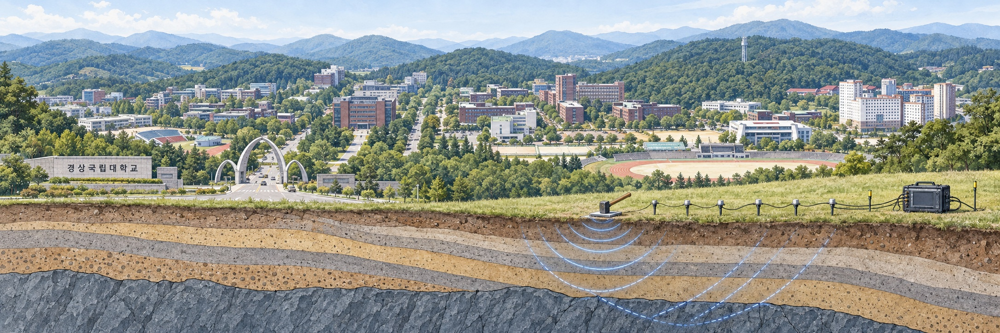

경상국립대학교 지질과학과
Geophysics Laboratory

연구실의 주요 연구 주제를 소개합니다.
탄성파 자료처리와 영상화, RTM과 FWI를 연구하며, 이방성 매질의 파동 전파와 파동장 분리를 함께 다룹니다.
머신러닝과 딥러닝을 지구과학 자료에 적용해 자료처리, 분류와 예측, 서로 다른 자료의 통합 해석을 연구합니다.
전기비저항과 자력 등 지구물리 탐사 자료를 지질·시추 정보와 함께 해석해 광상과 지하 구조를 조사합니다.
최근 게재 논문
2026년 5월
Journal of Seismic Exploration, 35(3), 026100045, 2026.